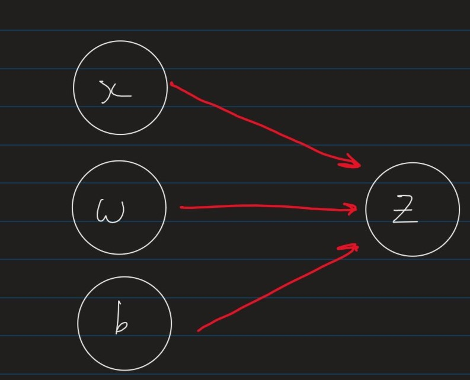
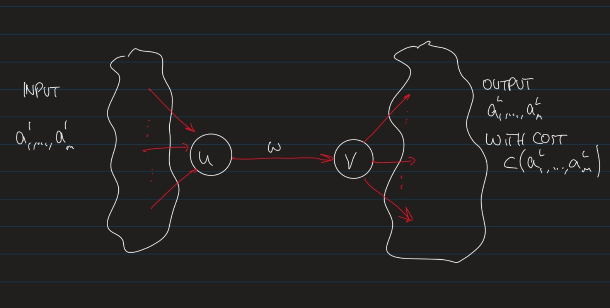
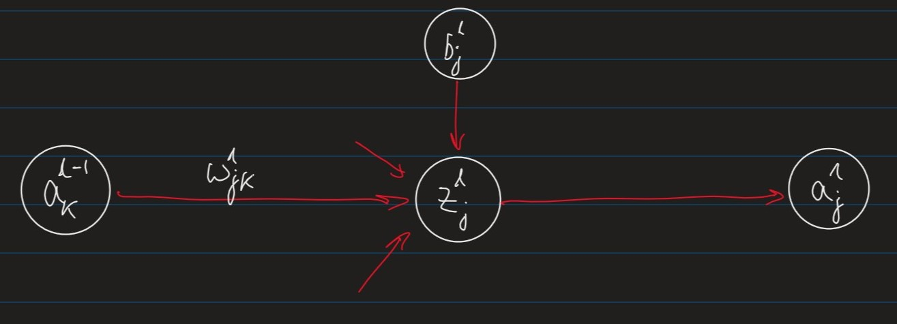
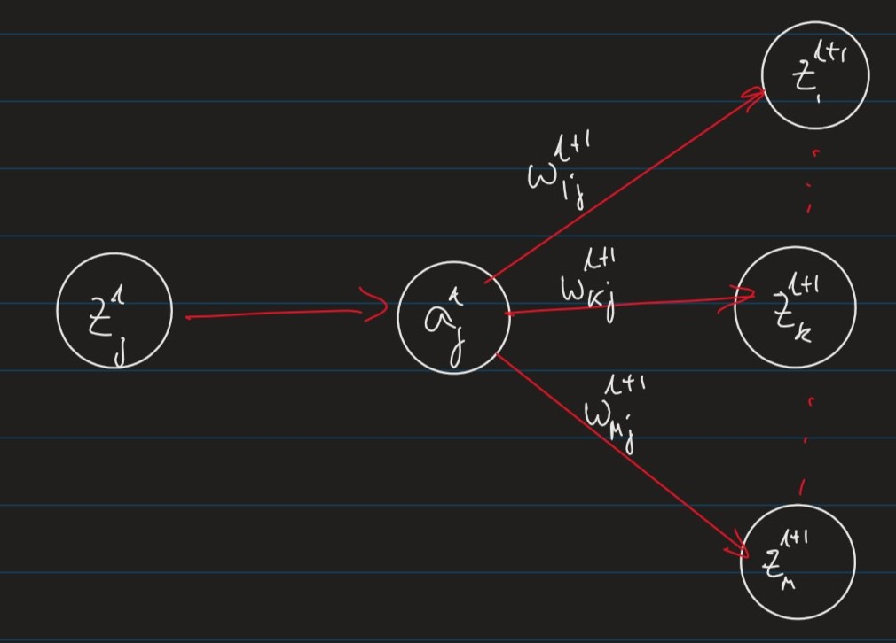

Lecture 5
Computation Graphs
We will describe ML models using computation graphs where
- Nodes represent variables (values, vectors, matrices)
- Edges represent functional dependencies
- i.e. an edge from $x$ to $y$ indicates that $y$ is a function of $x$
Example
The linear regression model, $z = \sum_{i=1}^m a_iw_i+b$ could be represented as:

Feed-Forward Neural Network
Stepping it up, here is a simple Feed-forward Neural Network:

Where:
- $L \leftarrow$ number of layers in the network, where
- layer 1 is the “input layer”
- layer $L$ is the “output layer”
- $m\leftarrow$ is the “width” of the network, which can change for each layer
- $w_{jk}^l\leftarrow$ is the “weight” of the connection between the $k^{th}$ unit in layer $l-1$, to the $j^{th}$ unit in layer $l$
- $b_j^l\leftarrow$ is the “bias” of the $j^{th}$ unit in layer $l$
- *Note: These appear for every $z$ node, for illustrative purposes I have only shown them on the first bank.*
- $z_j^l = \sumk w{jk}^l a_k^{l-1} + b_j^l \leftarrow$ is the weighted input unit $j$ in layer $l$
- $a_j^l = \phi(z_j^l)\leftarrow$ is the “activation” of unit $j$ in layer $l$, where $\phi$ is an “activation function”.
Training of Feed-Forward Neural Networks
The parameters of the network are:
- The weights $w_{jk}^l$ in each layer
- The Biases $b_j^l$

General Idea
To apply gradient descent to optimise a weight $w$ (or bias $b$) in a network,we apply the chain rule
(1)
$$\frac{\delta C}{\delta w} = \frac{\delta C}{\delta v}\cdot\frac{\delta v}{\delta w}$$

(2)
$$zj^l = \sum{k=1}^m w_{jk}^l a_k^{l-1}+ b_j^l$$
(3)
$$a_j^l = \phi(z_j^l)$$
(4)
$$\frac{\delta C}{\delta w_{jk}^l} = \frac{\delta C}{\delta z_j^l}\cdot\frac{\delta zj^l}{\delta w{jk}^l} = \frac{\delta C}{\delta z_j^l}\cdot a_k^{l-1}$$
Where $a_k^{l-1}$ is the “activation” of unit $k$ in layer $l-1$
(5)
$$\frac{\delta C}{\delta b_j^l} = \frac{\delta C}{\delta z_j^l}\cdot \frac{\delta z_j^l}{\delta b_j^l} = \frac{\delta C}{\delta z_j^l}\cdot 1$$
Hence, we can compute $\frac{\delta C}{\delta w_{kj}}$ and $\frac{\delta C}{\delta b_j^l}$ if we know:
(6)
$$\delta_j^l := \frac{\delta C}{\delta z_j^l}$$
The vector $\delta^l$ is called the local gradient for layer $l$
Local Gradient for output layers

(7)
$$a_j^L = \phi(z_j^L)$$
The local gradient for the output layer is:
(8)
$$\delta_j^L = \frac{\delta C}{\delta z_j^L}$$ By definition
$$= \frac{\delta C}{\delta a_j^L}\cdot\frac{\delta a_j^L}{\delta z_j^L}$$ By the chain rule
$$= \frac{\delta C }{\delta a_j^L} \cdot \phi’(z_j^L)$$ Because $a_j^L = \phi(z_j^L)$
The partial derivative $\frac{\delta C}{\delta a_j^L}$ depends on the cost function. For example, for a regression problem in $m$ dimensions, one could define :
(9)
$$C(a_1^L,\cdots,am^L) := \frac{1}{2}\sum{k=1}^m (y_k - a_k^L)^2$$ Where:
- $y_k$ is the desired output in the $k^{th}$ dimension
$ak^L$ is the predicted output in the $k{th}$ dimension
i.e. this is essentially mean squared error
in which case,
(10)
$$\frac{\delta C}{\delta a_j^L}= a_j^L - y_j$$
Local Gradient for Hidden Layers

(10)
$$z_k^{l+1} = \sumr w{kr}^{l+1} a_r^l$$
$$a_j^l = \phi(z_j^l)$$
(11)
$$\delta_j^l = \frac{\delta C}{\delta z_j^l}$$ By definition of local gradient $\delta_j^l$ $$= \frac{\delta C}{\delta a_j^l}\cdot \frac{\delta a_j^l}{\delta z_j^l}$$ By chain rule $$= \left(\sum_k \frac{\delta C}{\delta z_k^{l+1}} \cdot \frac{\delta z_k^{l+1}}{\delta a_j^l}\right)\cdot \phi’(z_j^l)$$ By chain rule with respect to $\frac{\delta C}{\delta a_j^l}$
$$= \phi’(z_j^l)\sum_k \deltak^{l+1}\cdot w{kj}^{l+1}$$ By [definition of local gradient $\delta_k^{l+1}$]()
Summary
$\forall$ weights, $w$ and biases $b$
(12)
$$\frac{\delta C}{\delta w_{jk}^l} = \delta_j^l\cdot a_k^{l-1}$$
(13)
$$\frac{\delta C}{\delta b_j^l} = \delta_j^l$$
Where the local gradient $\delta_j^l$ is:
(14)
$$\delta_j^l =
\begin{cases}
\phi’(z_j^L)\cdot \frac{\delta C}{\delta a_j^L} &\text{if $l=L$ (output layer)} \
\phi’(z_j^l)\cdot\sum_k \deltak^{l+1}\cdot w{kj}^{l+1} &\text{otherwise (hidden layer)}
\end{cases}$$
Matrix Description
The back-propagation algorithm can exploit efficient implementations of matrix operations
Note: recall that for a matrix $\textbf{A} \in \R^m\times\R^n$, $A_ij$ denotes the element in the $i^{th}$ row and $j^{th}$ column
For two matrices $\textbf{A} \in \R^m\times\R^n$ and $\textbf{B} \in \R^n\times\R^l$ | Operation | Name | | ———————————————————— | ——————— | | $(\textbf{A}^T){ij} = A{ji}$ | Matrix Transpose | | $(\textbf{AB})_{ij} = \sumk \textbf{A}{ik}\textbf{B}_{kj}$ | Matrix Multiplication |
For two vectors $\vec{u},\vec{v} \in \R^m$
| Operation | Name |
|---|---|
| $\vec{u}+\vec{v} = \langle u_1+v_1,\cdots,u_m+v_m\rangle$ | Vector addition |
| $\vec{u}\cdot\vec{v} = \sum_{i=1}^m u_iv_i $ | Dot Product |
| $\vec{u}\odot\vec{u} = \langle u_1v_1,\cdots,u_mv_m \rangle$ | Hadamard Product |
| $(\vec{u}\vec{v}^T)_{ij} = u_iv_j$ | Outer Product |
Weighted Inputs and Activations
(15)
$$z^l = (z_1^l, \cdots, z_m^l) $$
$$= \left( \sum{k=1}^m w{1k}^la_k^{l-1} + b1^l, \cdots, \sum{k=1}^m w_{mk}^la_k^{l-1}+ b_m^l \right)$$
$$= w^la^l-1 + b $$
(16)
$$a^l = (a_1^l,\cdots, a_m^l)$$
$$= (\phi(z_1^l), \cdots, \phi(z_m^l))$$
$$=\phi(z^l)$$
Local Gradients
Output Layer
(17)
$$\delta^L = (\delta_1^L,\cdots, \delta_m^L)$$
$$= \left( \frac{\delta C}{\delta a_1^L}\cdot \phi’(z_1^L), \cdots, \frac{\delta C}{\delta a_m^L}\cdot\phi’(z_m^L) \right)$$
$$= \nabla_{a^L}C \odot \phi’(z^L)$$
Hidden Layer
(18)
$$\delta^l = (\delta_1^l, \cdots, \delta_m^l)$$
$$= \left( \phi’(z_1^l)\cdot\sum_k \deltak^{l+1}\cdot w{k1}^{l+1} , \cdots, \phi’(z_m^l)\cdot \sum_k \deltak^{l+1}\cdot w{km}^{l+1}\right)$$
$$= \phi’(z^l) \odot \left( \sumk (w^{l+1}){1k}^T\delta_k^{l+1},\cdots, \sumk(w^{l+1}){mk}^T\delta_k^{l+1}\right)$$
$$= \phi’(z^l)\odot (w^{l+1})^T\delta^{l+1}$$
Backpropagation Algorithm
Input : A training example, $(x,y)\in \R^m\times\R^{m’}$
- Set the activation in the input layer $a^1 = x$
- for each $l=(2\cdots L)$, feed forward $z^l = w^la^{l-1}+b^l$ $a^l = \phi(z^l)$
- Compute local gradient for output layer $\delta^L := \nabla_{a^L}C \odot \phi’(z^L)$
- Backpropagate local gradients for hidden layers, i.e For each $l=(L-1 \cdots 2)$ $\hspace{10px}\delta^l := \left( (w^{l+1})^T\delta^{l+1}\right)\odot \phi’(z^l)$
- return the partial derivatioes $\frac{\delta C}{\delta w_{jk}^l} = a_k^{l-1}\delta_j^l$ $\frac{\delta C}{\delta b_j^l} = \delta_j^l$
Training Feed-Forward Neural Networks
Assume $n$ training samples
$$(x_1,y_1),\cdots,(x_n,y_n)$$
and a cost function:
$$C = \frac{1}{m}\sum_{i=1}^n C_i$$
Where $C_i$ is the cost on the $i^{th}$ example.
For example, with Mean Squared error, we can define it as:
$$C_i = \frac{1}{2}(y_i-a^L)$$
Where $a^L$ is the output of the network when $a^1 = x_i$
Backpropagation gives us the gradient of the overall cost function as follows:
(19)
$$\frac{\delta C}{\delta w^l} = \frac{1}{m}\sum_{i=1}^n \frac{\delta C_i}{\delta w^l}$$
$$\frac{\delta C}{\delta b^l} = \frac{1}{m}\sum_{i=1}^n \frac{\delta C_i}{\delta B^l}$$
Note: these provide the average gradient per training example
We can now use gradient descent to optimise the weights, $w$ and biases, $b$.
Mini-Batch Gradient Descent
Computing the gradients is expensive when the number of training examples, $n$ is large
We can approximate the gradients:
(20)
$$\frac{\delta C}{\delta w^l} \approx \frac{1}{b}\sum_{i=1}^b \frac{\delta C_i}{\delta w^l}$$
$$\frac{\delta C}{\delta b^l} \approx \frac{1}{b} \sum_{i=1}^b \frac{\delta C_i}{\delta b^l}$$
using a random “mini-batch” of $b\leq n$ training examples
| Size | Name |
|---|---|
| $1<b<n$ | Mini-batch Gradient Descent |
| $b=1$ | Stochastic Gradient Descent |
| $b=n$ | Batch Gradient Descent |
It is common to use mini-batch size of $b \in (20,100)$